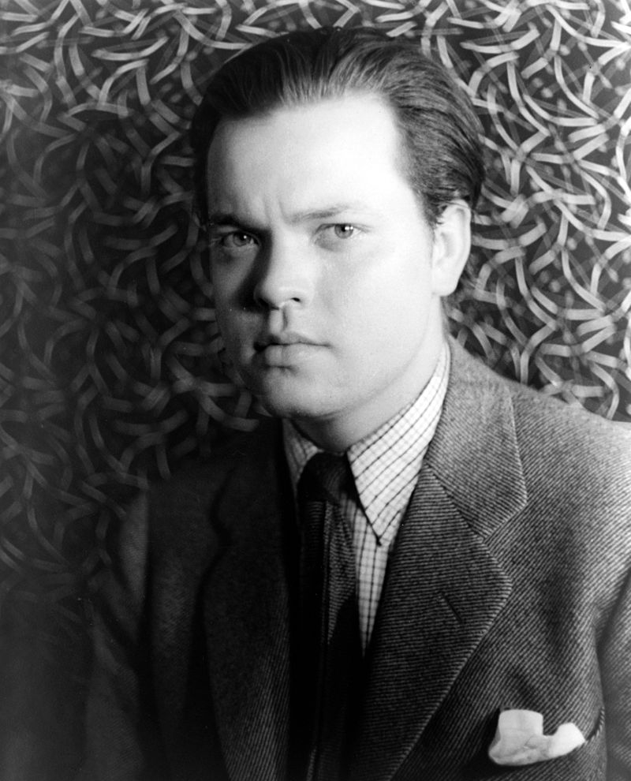

Actors
The principal cast were:

Orson Welles
The quasi-biographical film examines the life and legacy of Charles Foster Kane, a character based in part upon the American newspaper magnate William Randolph Hearst and aspects of the screenwriters' own lives.

Joseph Cotten
The beginning of the film's ending credits state that "Most of the principal actors in Citizen Kane are new to motion pictures. The Mercury Theatre is proud to introduce them."
Dorothy Comingore
Citizen Kane was a rare film in that its principal roles were played by actors new to motion pictures. Many were members of the skilled repertory Mercury Actors comapny assembled by Welles for the stage and radio performances in 1937.